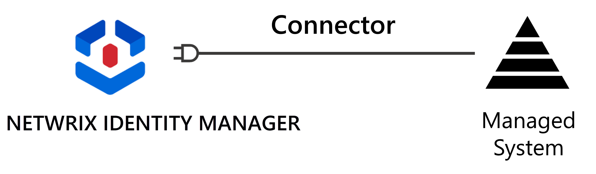
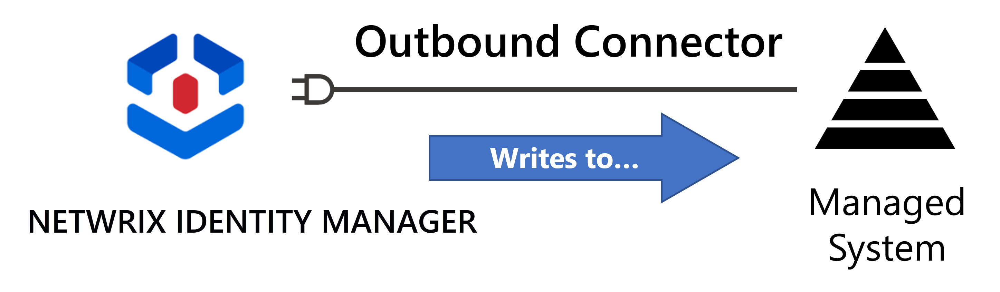
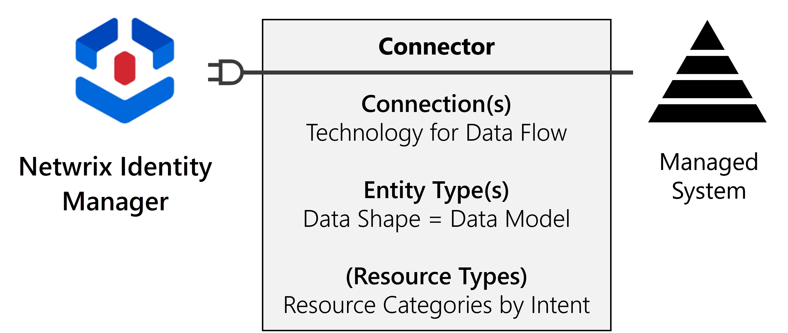

Connect to a Managed System
How to create a new Connector using the provided SaaS agent. See the Architecture topic for additional information.
Identity Manager provides demo applications (Run the Banking Demo Application and Run the HR Demo Application) to help set up connectors, test them, and understand Identity Manager's abilities towards external systems.
Overview
Connectors are the mechanisms that enable Identity Manager to read and write data to/from your organization's systems. The feedback mechanism ensures Identity Manager's reliability.
In this documentation, we talk about managed systems (sometimes called external systems) to refer to third-party applications, i.e. the applications used in your organization, such as Active Directory, ServiceNow, EasyVista, SAP, SharePoint, etc.
A connector, therefore, acts as an interface between Identity Manager and a managed system.

NETWRIX strongly recommends the creation of one connector for one application.
For example, integrators may create an
ADconnector with the goal of importing an Active Directory's data into Identity Manager, and writing to the Active Directory from Identity Manager, either manually for administration accounts, or automatically for basic accounts.Integrators may create a
SharePointconnector in order to manage read and write entitlements for users in SharePoint.
Data Flows
In the early steps of a project, we'll consider most of our connectors to be outbound, i.e. Identity Manager will feed data into connected managed systems.

In this case, data flows between Identity Manager and the managed system are also called:
- synchronization in the "managed system-to-Identity Manager" direction;
- provisioning in the "Identity Manager-to-managed system" direction.
For a connector's synchronization, Identity Manager provides tools to perform a basic extraction of the system's data in the form of CSV files. These files are cleaned and loaded into Identity Manager. In other words, synchronizing means taking a snapshot of the managed system's data and loading into Identity Manager.
For provisioning, Identity Manager generates provisioning orders and the connector provides tools to either automatically write these orders to the managed system or to create a ticket for manual provisioning.
For example, we can use the data from Identity Manager's Identity repository to fill in later the AD's fields, such as users' display names based on their first names and last names from the repository. See the Create the Workforce Repository topic for additional information.
Identity Manager can also benefit from inbound connectors, that will write data to Identity Manager's central identity repository. While both inbound and outbound connectors allow data to flow both ways, they do not work in the same manner.
Technical principles
Identity Manager's connectors all operate on the same basic principles. Technically speaking:
For example, let's say that we want to connect Identity Manager to our Active Directory, or AD.
-
a connector must be created, first as a named container which will include the connections and entity types related to one managed system;
We create a connector named
AD(so far, an empty shell). -
a Connector is linked to an agent which acts as the go-between for Identity Manager's server and the managed system;
Our
ADconnector uses the provided SaaS agent. -
a Connection describes the technology used that enables data to flow back and forth between Identity Manager and the managed system;
We want to use a connection
Directory/Active Directoryto perform synchronization and automated provisioning, and a second connectionTicket/Usercubeto perform manual provisioning through Identity Manager.You can find standard connections dedicated to one application (AD, Microsoft Entra ID, etc.), and generic connections to communicate with any application (CSV, Powershell, RobotFramework, SQL, etc.).
-
the shape of the extracted managed system's data is modeled by Entity Type (we will use the term resource to refer to an entity type that has been instantiated);
We create a single entity type
AD - Entrywhich contains all the attributes that will describe its resources, i.e. AD groups and users. The attributes include the department, the employee identifier, the manager, the group membership (member/memberOf), the dn, the parent dn, etc. -
the intent of resources within the managed system is made clear by categorizing resources into Create a Resource Type . See the Categorize Resources topic for additional information.
We categorize AD resources into distinct resource types:
AD User (nominative)for basic accounts, which we want Identity Manager to provision automatically;AD User (administration)for sensitive administration accounts, which we want to provision manually through Identity Manager.

A connector requires at least one connection and one entity type.
When provisioning a managed system, the corresponding connector also needs at least one resource type.
Local vs. Saas agents: To simplify things, Identity Manager has made it possible to start configuring connectors without installing a local agent in your organization's network. Instead, you can use the agent integrated with Identity Manager's server in the Cloud (SaaS agent).
Participants and Artifacts
For a given managed system, integrators may need the help of the application owner who knows the functional and technical details of the application.
| Input | Output |
|---|---|
| Administrator account for the Development Environment (required) Identity repository (required) User Profile (required) |
Connector Connected System |
See the Install the Development Environment Create the Workforce Repository , and Configure a User Profile topics for additional information.
Create a Target Connector
For one managed system, create a connector by proceeding as follows:
- Outside Identity Manager, Model the Data .
- Create the Connector for said managed system.
- Enable the technical transfer of data by creating and configuring Create a Connection.
- Set up Create an Entity Type to represent the data model decided upon in step 1.
Connector modification: The process for modifying a connector is not so different from the process for creating a connector, as you mainly modify the fields specified during creation. However, keep in mind that a connector must be deactivated before modification, in order to withdraw the connector's synchronization- and provisioning-related tasks from any jobs. See below this note.
You can activate the connector again at any time using the same button.
Next Steps
Once the connector has been created, you can start to Synchronize Data .